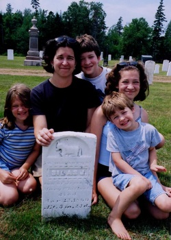

MY TALE:
I have always been fascinated with family history and how the generations before us have contributed to the foundations of who we are. There were two seminal moments that served as the basis for my desire to pursue a business that would help people tell their tales. As a young married mom with four kids I found the diary of my great-great grandfather whose family had emigrated from England to Prince Edward Island to serve as itinerant missionaries. In the diary were stories of places and people that all came alive to me on a family trip to PEI. The mention of a child who died and was buried on the island before the family moved to Canada was brought to life when we actually found a tiny grave with a lamb carved on it bearing the name of my relative in an out-of-the-way cemetery in Murray Harbor. I was most likely the first relative to visit this grave since the family left PEI in the late 1800's on a new assignment. I wanted to know more about my ancestors, the life they lived and the values and faith they handed down to subsequent generations.

The second motivation was when our family received the devastating news that both of my parents had been diagnosed with Alzheimers. All of a sudden the reality hit that our family's oral history was about to be lost to the ravages of a memory debilitating disease. I would be left without the ability to ask who were the familiar but unidentified faces in our historic family photos, or to hear dad tell the tale of Uncle Lester's heroic attempt to save someone during the hurricane of 1938. How could I capture these family tales in a permanent record for my own children to learn about those who went before them, their faith, their values and the interesting lives they lived?
For these two reasons I decided to start Tell The Tales. In this digital age our attention is captured by TV, DVD's, video games and computers. I, too, am captivated by the combination of audio, photography and video. What better medium to capture life's milestones and family history than through a video biography which can incorporate all forms of media and combine them into a fascinating and moving tribute to lives well-lived. It is a gift we can give our children and loved ones; memories collected in a lasting format that should be passed down for generations to come.
This verse from Psalm 71:17-18 sums it up for me: "Since my youth, O God, you have taught me, and to this day I declare your marvelous deeds. Even when I am old and gray, do not forsake me, O God, till I declare your power to the next generation your might to all who are to come." (NIV)
This verse from Psalm 71:17-18 sums it up for me: "Since my youth, O God, you have taught me, and to this day I declare your marvelous deeds. Even when I am old and gray, do not forsake me, O God, till I declare your power to the next generation your might to all who are to come." (NIV)